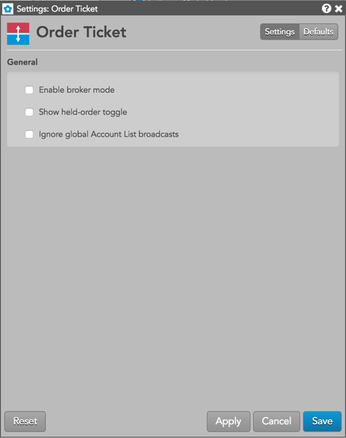

These settings affect only the selected Order Ticket widget. To update the default settings with these value for newly-opened Order Ticket widgets, or to apply them to existing opened widgets, click Defaults.

| Setting | Description |
|---|---|
| Enable broker mode | Displays an Order Ticket with a single Buy or Sell button based on whether you are entering a bid or ask. When enabled, you can also enable the Left-click = aggressive setting in Edit | Preferences from the workspace menu bar. When this setting is enabled, the Order Ticket is automatically seeded to lift the offer (Buy) or hit the bid (Sell). |
| Show held-order toggle | Sets whether to show/hide the "Hold" button on the Order Ticket. This button is used to submit new orders as held orders. |
| Ignore global Account List broadcasts | {% include settings/ignore-acct-list.html %} |
The following table provides descriptions of the free-form text fields on the Order Ticket when entering orders to exchanges supported by the TT platform.
{% include fft-table.html %}